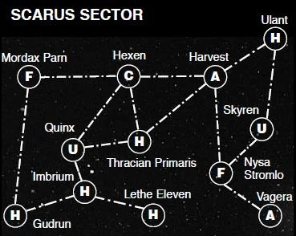

Helican Sub-sector
| Helican Sub-sector | |
|---|---|
| Sub-sector of the Scarus Sector | |
 Chart of the Scarus Sector, with the Helican Sub-sector's principal systems and warp routes | |
| Sector | Scarus Sector |
| Segmentum | Segmentum Obscurus |
| Capital | Thracian Primaris (hive world) |
| Notable worlds | Thracian Primaris, Gudrun, Bonaventure, Thessalon, Hubris, Lethe |
| Governing body | Sub-sector governor Jeromya Faurlitz IV, who also commands the Astra Militarum forces in the sub-sector |
| Status (as of M42) | Imperial; under Inquisitorial watch; the sub-sector's governor holds ties to the Warmaster in the sector |
The Helican Sub-sector is a sub-sector of the Scarus Sector in the Segmentum Obscurus of the Imperium of Mankind. Its capital is the hive world of Thracian Primaris, and its governor since the late 41st millennium has been Jeromya Faurlitz IV. The sub-sector is best known for the Helican Schism, a wave of rebellion, terrorism and sabotage that swept its worlds in the early 41st millennium, and for its place in the careers of several Inquisitors.[1]
The sub-sector's worlds are linked by a web of warp routes that the sector's fleets patrol. Like most sub-sectors, its systems are grouped by the routes that join them, and Imperial charts show the principal systems in a network around Thracian Primaris. Its outlying worlds, such as Damask, lie on the edge of the sub-sector and are less well documented.[2]
History
[edit]Early settlement
[edit]Some worlds of the Helican Sub-sector have been inhabited for thousands of years. Gudrun, the former sub-sector capital, has had a human presence for more than 3,500 standard years. It is now a civilised world within the sub-sector.[2][a]
The world of Damask was colonised in 700.M40 and lies on the outer edge of the sub-sector. Its colonists were among the last to settle in the sub-sector's frontier.[2]
The Helican Schism
[edit]In the early 41st millennium the sub-sector was swept by the Helican Schism, a wave of rebellion, terrorism and sabotage. Its causes are recorded in several accounts, and the Administratum has never settled them to general satisfaction. The sub-sector's garrisons and Inquisitorial agents were both involved in restoring order, though the sources do not agree on the Schism's end.[1][b]
Eisenhorn and the Inquisition
[edit]The sub-sector is closely linked with the Inquisitor Gregor Eisenhorn, whose agents came from its worlds. Alizebeth Bequin and the agent and scholar Kara Swole were both born on Bonaventure, where ancient wheel-like tombs were found that may be the remains of the pre-Imperial Saruthi. Both served Eisenhorn in the years of his greatest investigations.[3]
In 343.M41 an Inquisitorial conclave was held on the feudal world of Thessalon. Eisenhorn met there with Commodus Voke, an emissary of Inquisitor-General Neve, Massimo Ricci, envoy of Inquisitor-Lord Rorken, and Titus Endor. The conclave's decisions are recorded in the sealed archives of the Ordo Xenos.[3]
Warmaster's presence
[edit]The Imperial Warmaster Honorius has been present in the Scarus Sector, and the governor of the Helican Sub-sector has established strong political ties with him. The Warmaster's presence is recorded in the Helican Sub-sector's Administratum registers.[1][c]
Geography
[edit]The sub-sector is a cluster of star-systems linked by warp routes that the sector's fleets patrol. Its principal systems include Thracian Primaris, Gudrun, Hesperus and Damask, and its warp routes run through Hesperus, a trade world famed for wine and corn. Its outer worlds lie beyond the main routes and are seldom visited.[2]
Notable worlds
[edit]- '''Thracian Primaris''' (hive world): the sub-sector's capital. The planet has no moons, and its people live in hive cities scattered over seven-tenths of the surface. It is guarded by five Ramilies-class Starforts and has a Planetary Defence Force of eight million.
- '''Gudrun''' (civilised world): the former sub-sector capital.
- '''Bonaventure''': the birthplace of Alizebeth Bequin and Kara Swole, and the site of ancient wheel-like tombs.
- '''Thessalon''' (feudal world): the site of the Inquisitorial conclave of 343.M41.
- '''Hubris''' (ice world): named for the pride of its first colonists.
- '''Hesperus''': a trade world producing wine and corn, on a route through the sub-sector.
Governance
[edit]The sub-sector is governed by a governor who answers to the sector's Lord Sector. The governor also commands the Astra Militarum forces in the sub-sector, and the Navy's fleets patrol its warp routes under the sector's Lord Admiral. The Inquisition keeps agents in the sub-sector, and its conclaves meet within the Scarus Sector.[4]
Timeline
[edit]| Date | Event |
|---|---|
| c. 700.M40 | Damask is colonised on the outer edge of the sub-sector |
| Early 41st millennium | The Helican Schism sweeps the sub-sector |
| 343.M41 | Inquisitorial conclave on Thessalon, with Gregor Eisenhorn |
| c. 300.M41 | Eisenhorn's agents from Bonaventure serve in his investigations (estimated) |
| Present day (M42) | Thracian Primaris is the capital; Jeromya Faurlitz IV governs the sub-sector and commands its Astra Militarum forces |
See also
[edit]Notes
[edit]- ^ The age of Gudrun's settlement is given in standard years in the record. Its exact calendar date cannot be fixed from the record.
- ^ Imperial accounts disagree over the Schism's causes. The Administratum records give economic grievances; Inquisitorial records give the work of a heretical cult.
- ^ The date of Honorius's presence in the sector is not given in the consulted records.
References
[edit]- ^ a b c Codex Imperialis (rev. 980.M41). Adeptus Terra.
- ^ a b c d Imperius Dominatus: Commentaries of the Astra Cartographica (rev. 990.M41). Administratum, Terra.
- ^ a b Xenographica Ordo Xenos (M40, sealed edition). Inquisition, Terra.
- ^ Ordinances of the Departmento Sectorum (rev. 900.M41). Administratum, Terra.